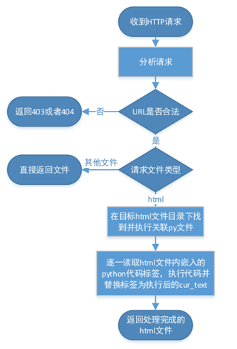

Ouroboros使用手册
版本：2.3.1
编写日期：2018年12月5日
|
一、 服务器配置 1. Python环境：本框架在python3.5环境下测试通过。 2. 文件目录及作用：
3. Config中的配置：
4. 启动服务器： 4.1启动:运行my_server.py启动服务器。 4.2网页访问： 4.2.1网页映射规则：服务器工作方式可以看作将DEFAULT_ROOT文件夹下的文件映射到网络上。例如当外网IP=123.123.123.123，PORT = 8888，DEFAULT_ROOT = "./index/"时，目录./index/home下有一网页文件abc.html，则该文件的本地访问地址为http://localhost:8888/home/abc.html（localhost可改为127.0.0.1），外网访问地址为http://123.123.123.123:8888/home/abc.html。 4.2.2禁止访问：服务器只允许对DEFAULT_ROOT文件夹下的文件进行访问，若访问超出范围，则会触发403 Forbidden错误，跳转到PAGE_403指定的页面。例如DEFAULT_ROOT = "./index/"，PAGE_403 = "./error/403.html"时，发生403错误则返回页面./index/error/403.html 4.2.3找不到页面：当访问路径合法时，却找不到请求url所指定的文件时，会触发404 Not Found错误，跳转到PAGE_404指定的页面。也就是说服务器会先检查访问路径是否合法，再检测请求文件是否存在，即403错误优先级高于404。 二、 嵌入Python代码 1. 嵌入Python代码到网页中：通过标签对<?python ?>可以将python代码嵌入到网页文件的任意位置。下面是一个最简单的hello world页面代码：
2. echo和cur_text： 2.1 cur_text：cur_text储存了一个局部字符串变量。当请求网页时，服务器会检测并执行所有<?python ?>标签中的代码，你可以在代码中随意获取或改变cur_text.str的值，当标签中python代码执行完毕后，整个标签会被替换成cur_text.str的内容。对于每个标签中的代码，cur_text默认为空字符串且相互独立，不会相互影响。例如下面的代码：
代码会输出hello world。第二个标签开始执行时，cur_text为空，而不会受到第一个标签中的代码影响，执行结束后，第二个标签被替换成world。
2.2 echo：第一个hello world的例子中就使用了echo函数。顾名思义，echo函数表示在当前标签处显示一段文本，下面三行代码本质上是等价的。
3. 关联*.py文件 3.1为什么需要关联：当需要编写的Python代码较少时，使用<?python ?>标签内嵌代码确实很方便，但需要大段的Python代码时，内嵌代码非常不利于编写和调试。此时可以通过py文件关联，将大段代码以函数形式定义在.py文件中，在内嵌代码时仅调用所需函数。 3.2关联规则：*.html文件与同名的*.py文件相关联，执行时，先执行py文件，再执行html文件中的内嵌代码。故可以将大段的代码以函数的形式写在py文件中，再在html文件中予以调用。如将下面代码分别写在abc.html和abc.py中：
3.3编写技巧：echo、cur_text等变量由于没有在py文件中定义，在pycharm等IDE中编写代码时，会被标红报错，但实际上代码可以正常运行。此时可以通过global关键字，使IDE知道echo等变量在其他地方有定义，上面的代码可以写成：
4. send_response和send_header 4.1 send_response(code)：返回HTTP状态码Code。如默认的404页面404.html中，第一行代码是<?python send_response(404)?>，即返回HTTP状态码404。若多次返回状态码，则仅最后一次有效。如不指定状态码，则默认返回200（请求成功）。关于HTTP状态码及其意义，请学习HTTP协议，也可参考链接：http://www.w3school.com.cn/tags/html_ref_httpmessages.asp。 4.2 send_header(key,value)：设置一个返回header，key和value分别是键名和键值。若多次设置同一header，则仅最后一次有效。关于HTTP的header及其意义，请学习HTTP协议。 5. Python代码的工作方式 Python代码的执行发生在服务器端而不是在前端，不要因为python代码被嵌入在html里，就认为这些代码是被浏览器执行的，理解python代码、html、css、javascript等代码的关系和执行顺序是开发的基础。本框架只负责页面中全部的python代码的执行，框架工作顺序如下：  特别注意，服务器执行python代码的路径是html文件所在路径，这会引起库文件引用、文件读写等操作时路径的变化（这个特性可能在之后的版本中改正）。 三、 HTTP请求参数 一个完整的HTTP请求中，除了URL以外，还有更多的参数。例如在搜索引擎中，服务器还需要通过HTTP请求获取搜索字串，在登录时，需要获取登录的账号和密码等。关于各种参数传递方法及其区别，请学习HTTP协议，也可以参考链接http://www.w3school.com.cn/tags/html_ref_httpmethods.asp 1. gets和posts：HTTP请求中的GET参数和POST参数会被框架解析，并以字典的形式分别保存在gets和posts中方便使用。 1.1 GET型请求：GET型请求是最常见的请求，GET型请求的参数跟在URL后，以?连接以&并列。如/test.html? a=123&b=345&a=abc，收到该请求后，URL会被解析并提取参数，此时gets= {'a': ['123', 'abc'], 'b': ['345']}，由于GET型请求不带POST参数，此时posts={}。注意每个键名对应的都是一个字符串列表，取用仅出现一次的键时，不要忘了gets['b'][0]。 1.2 POST型请求：通常来说，对安全性要求更高的场合一般使用POST请求，如登录注册时。POST请求可以同时包含GET参数和POST参数，可以通过相同的方式从变量gets和posts中获取参数。 2. headers：HTTP请求中的header会以字典的形式保存在headers变量中。如：headers={'user-agent': 'Mozilla/5.0 (Windows NT 10.0; Win64; x64) AppleWebKit/537.36 (KHTML, like Gecko) Chrome/69.0.3497.100 Safari/537.36', 'cookie': ssid=64791705', 'accept-language': 'zh-CN,zh;q=0.9'} 四、 变量与作用域 1. 一般变量：一般变量的作用域是一次请求。在关联py文件中定义的全局变量可以在这次请求所涉及的全部代码中生效，这也是可以在关联py文件中定义函数，然后在内嵌python代码中调用的原因（python中定义函数本质上是定义了一个可执行变量）。而在内嵌代码中定义的变量，不能在关联py文件中生效，这是代码执行顺序的原因。 当请求完成后，所有定义的变量都会失效。再次请求相同的文件时，相同的python代码被执行，虽然变量的名字不变，值也可能不变，但与上次请求时定义的变量已经不同了。 2. 全局变量：为了使定义的变量不在请求完成后丢失，框架提供了全局变量global_variables，global_variables是一个字典，其中保存的内容可以在全局的代码中生效。如令global_variables["a"]=233，则在任意地方都可通过global_variables["a"]得到其中保存的值。 3. 用户变量：大多数开发中，我们还关心如何将用户区分开来，例如保存用户的登录状态和个人信息，为不同用户提供不同的页面。框架为此提供了全局变量session，每次请求时都会装入请求者对应的session变量。同global_variables一样，session也是一个字典，使用方式也完全相同，只不过每个session变量都是用户专用的。 框架识别用户的方式是，为每个访问用户在cookie中发放一个唯一的ssid，并通过浏览器返回的不同ssid值区分用户，再取出该ssid对应的session变量，如果是新用户，则会新建一个空session字典。开发时可以不关心这些原理，但了解原理无疑有助于开发。通过cookie识别用户与账号区分有很大不同，cookie是属于浏览器的，这意味着使用两个浏览器、清空浏览器缓存、或使用隐身模式浏览都会被识别为两个用户。 五、 其他 1. 使用global：框架提供的所有变量和函数，都无法被IDE检测到，这意味着IDE会对使用了这些函数的代码标红报错，尽管函数可以正常使用。在二.3.3中，已经提到了可以通过global echo的方法对IDE声明echo函数，消除无意义的报错。对于框架提供的其他函数，如send_header, send_response等，同样可以用global关键字予以声明。 对于框架提供的变量，如session, gets, global_variables等，在函数中使用时则必须使用global关键字，否则会产生未定义错误。 2. ajax：二.5中已经提到，全部的python代码的执行，都发生在收到请求时，结束于完成请求时。服务器将python渲染完毕的文件发回前端，能在前端生效的代码只有html, css, javascript。但有时我们希望前端在收到页面后仍能与服务器产生互动，例如动态加载某些数据，这时则需要用到ajax。 2.1 ajax概述：ajax是原生javascript提供的动态获取数据的手段。通过在javascript代码中，写明请求地址、请求方式等，从服务器异步获取数据，数据到达后再通过回调函数，完成一系列功能。具体内容请学习javascript ajax相关内容。 2.2 ajax_map：服务器框架提供了ajax_map.html和ajax_map.py两个文件帮助进行ajax异步调用。在ajax_test.html中，有三个通过ajax_map间接调用python函数并获取执行结果的例子。 在前端调用ajax_map需要先引入ajax_map.js，然后通过函数ajax_caller(func,callback,params)完成调用，其中func是函数名，callback指定一个回调函数，回调函数必须接受一个字符串参数，定义收到服务器反馈的字符串后的行为，params是目标函数接受的参数列表，可空。如ajax_test.html的例三：
点击按钮后，相当于在服务器执行了函数test_params(10086,10010)，并把执行结果显示在myDiv中。 而服务器端为了执行test_params函数，需要预先在ajax_map.py中的AjaxMapper类中定义对应的静态函数，函数返回值必须为字符串，这个字符串也就是前端回调函数收到的字符串。 Json：由于ajax_map传输的数据只能为字符串，造成了一定的不便，这里推荐使用Json来将数据格式化为字符串。由于Python与javascript都对json提供了支持，这使得用json作为数据传输格式可以带来极大的方便。ajax_test.html中的例二展示了json数据的打包和拆包。关于json的更多内容请自行了解。 |